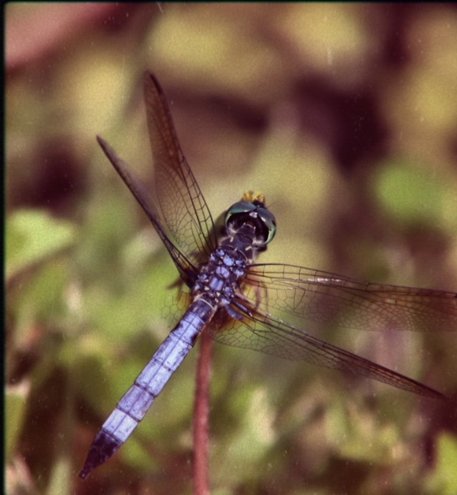
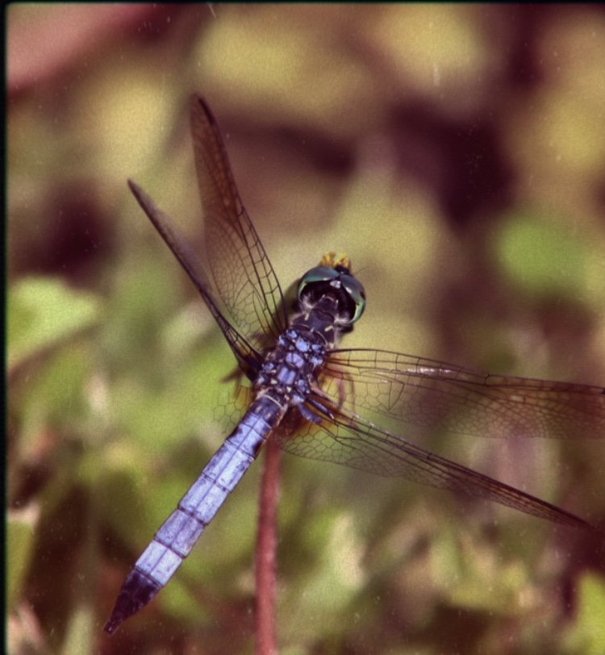
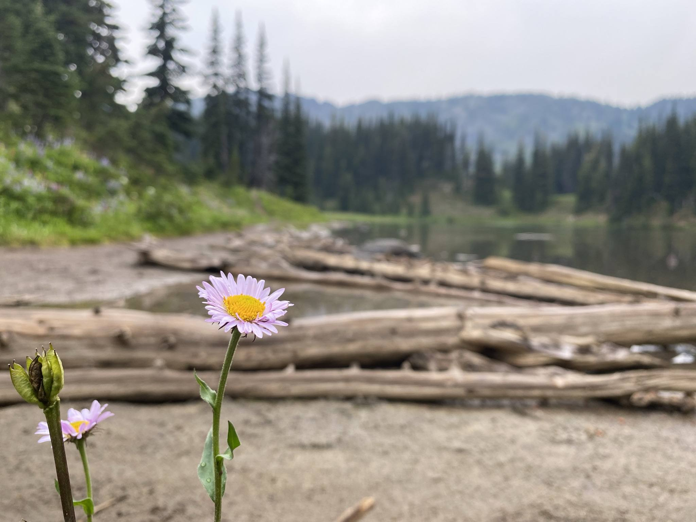
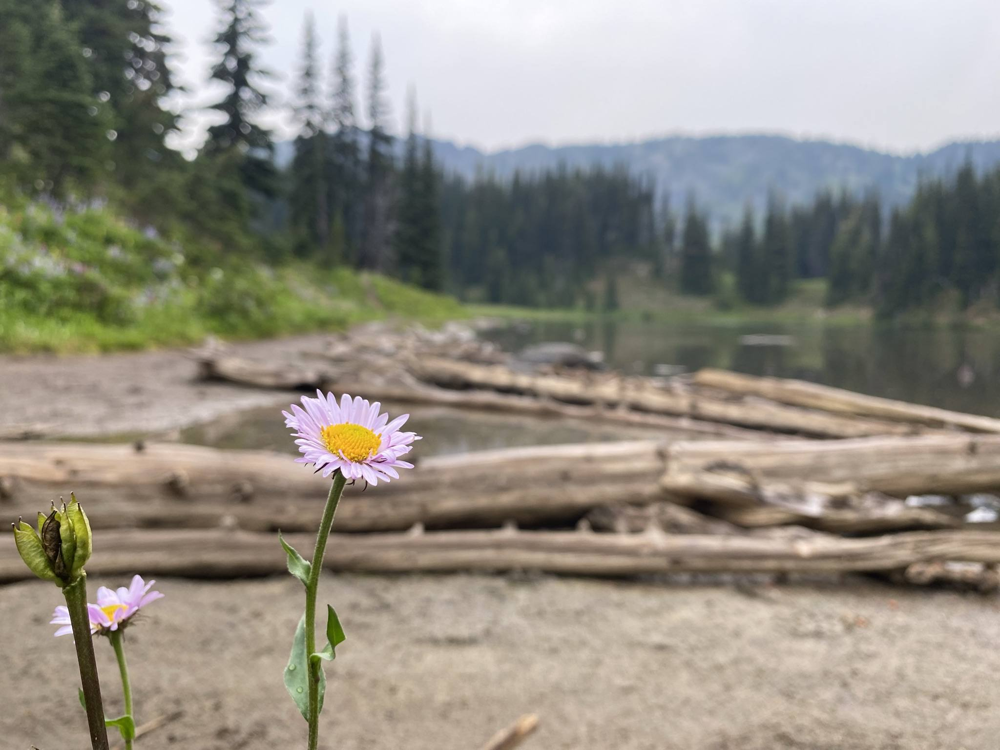

One of Masha's favorite pastimes is photography. Taking photos is something Masha does for fun and as a means of self-expression. Capturing moments is a form of healing, and a way to anchor good memories. She is by no means a professional—she doesn't use fancy techniques or know her camera inside-and-out—but she certainly has an eye for beauty and enjoys the process of getting the best photo. Masha specifically enjoys taking pictures of nature, wildlife, and urban architecture. This section of the website serves to showcase a few of Masha's favorite photos she has taken.
 


 



Due to the extensive trauma Masha experienced during her childhood and adolescence, Masha developed Complex Post-Traumatic Stress Disorder. Masha struggled intensely with related symptoms as child, adolescent, and in her early young-adulthood.
Complex Post-Traumatic Stress Disorder (cPTSD) is a disorder resulting from long term, repeated, or severe traumatic events or abuse from which escape is difficult or impossible. Often—as was the case for Masha—this occurs during childhood, when individuals are developing their sense of self, forming relationships, and learning about the world around them. As a result, cPTSD causes problems with emotional regulation, dissociative episodes, challenges with self-perception and confidence, difficulty with relationships and attachment, among other deeply troubling symptoms. Your brain and nervous system develop in such a way that you are always in a fight-or-flight state. Your body feels like it is constantly reliving the traumas you have faced before, and a heavily dysregulated nervous system causes intense physical responses including excessive releases of stress hormones such as adrenaline. You can learn more about cPTSD by visiting the links on the resources page here.
After years of trauma, sickness, abuse, and delay in healing, Masha took a big step and began seeing a trauma-informed counselor in late 2019. In the years and months since, she has been able to start healing, develop healthy regulation skills, break free of toxic behaviors and thought patterns, and begin pursuing her dreams with a renewed vigor.
Masha is by no means cured of her cPTSD, nor fully healed from the horrors she has faced. This is especially apparent in social situations, work and learning environments, with deep feelings of grief and injustice, and when undergoing even the most mundane medical procedures. As she begins to disentangle her complex web of traumas, understand her experiences and the coping mechanisms her body has used to keep her safe, she continues to work hard daily to overcome the obstacles that resulted from her circumstances in life.
At the same time, Masha strives to be a voice and advocate for others who have faced trauma, abuse, and injustices. From the horrors of war, poverty, abuse, slavery, racism, generational trauma, colonialism, religious persecution, genocide, the list goes on—Masha understands she is not alone in her experience. Masha hopes that by fostering understanding and awareness of trauma, injustice, and patterns of abuse, we can individually and collectively create a kinder, safer, more understanding, considerate, accommodating, and just world.
You can begin learning more about Complex Post-Traumatic Stress Disorder by visiting this link.

In April 2004, at the age of seven, Masha became very sick. She was fatigued, feverish, dizzy, and nauseous. Masha was still living at home with her mama when she became sick, and Mama was already battling a severe case of tuberculosis (that would ultimately end up taking her life). Masha has memories of Mama treating her with homemade folk remedies such as drinking pepper-infused vodka or—Masha's personal favorite—boiling a pot of potatoes underneath a blanket and inhaling the fumes.

Due to her own declining health and inability to give Masha the care she needed, in August 2004, Mama made the difficult decision to take Masha to a social rehabilitation center for minor children, where she could receive the treatment and care she needed. Mama told Masha “I will come back for you”. Masha remembers being shaved bald and placed into a scalding hot bath upon admission to the center. She has eerie memories of this place, where unwanted or uncared for children often were sent. After some difficulty and delay in diagnosing Masha, she was eventually transferred to the Regional Children's Clinical Hospital No. 1 in Vladivostok where she was diagnosed with acute lymphoblastic leukemia (ALL).

All alone and just barely over 8 years old, Masha began treatment for her cancer at the hospital in Vladivostok. Though she was classified as an intermediary risk group, she was given a more intense treatment meant for high risk patients which notably included more intense chemotherapy and cranial radiation. The hospital where she was treated was notoriously unsatisfactory: unkempt, stale dry air, dirty, dilapidated, harsh medical staff, and most notably infested with cockroaches. Masha was left alone for the duration of her stays. No visits from loved ones, no friends, no allies. She even had to clean her own vomit and excrement sometimes due to negligent staff. Masha was pricked so many times with needles that to this day she is unable to get injections or an IV put into her right arm due to the dense scar tissue. The windows were barred, and piles of ladybugs or cockroaches collected behind the radiator against the wall. She recalls hearing hospital staff talking amongst themselves, saying things such as "has that stupid girl died yet?". She was even struck by staff when she struggled through painful procedures. When she was permitted to return to the orphanage between hospital stays, she was relentlessly bullied, scorned, and avoided by the other orphan children (who were deeply traumatized in their own right). She describes feeling like she was the disease, not the cancer itself. In December 2006, after 106 weeks of fierce fighting, intense suffering, and lonely treatments, Masha completed the last stage of her cancer treatment. This brave, resilient 10 year-old girl had beat cancer.


After being adopted and brought to the United States, Masha's doctors were surprised to read the details of her treatment. They were astonished at the intensity of her treatment, noting that the measures taken were usually reserved for high-risk patients. It wasn't until Masha was older that she read more and learned that she was actually a part of a medical study based on the Moscow-Berlin 2002 treatment protocol, which was carried out at clinics across Russian and Belarus between 2002 and 2008 to investigate the efficacy of a treatment protocol for ALL in children and adolescents. The study found that patients in the intermediary risk group experienced better outcomes when given the high-risk treatment, despite its increased intensity and toxicity. Masha's experience as a cancer patient while an orphan in Russia was deeply traumatizing to say the least, but it fostered a deep curiosity and fascination about the human body, cancer, and medicine. Her battle and subsequent curiosity instilled a passion and deep motivation to the enter the medical field.
Learn more about Masha's aspirations in medicine and more by clicking here

A core concept of Masha's experience with battling leukemia in her childhood was the unknown. As a child with no parent-figure, family, or friend to support her battle, she was left to constantly wonder what was happening to her and why. What are they putting in her body? Why does she feel so nauseous, weak? After seeing people die around her, she wondered if she would be next.
![Masha is pictured here with her decorated graduation cap which reads 'The flower that blooms in adversity is the most beautiful of all.'—a shortened version of a quote from the Disney movie Mulan. The quote resonates with Masha's perception of herself as having achieved something truly special, by persevering and succeeding despite some of the greatest challenges. She hopes to inspire others who have faced challenging life circumstances to pursue their dreams and to not hesitate to utilize the resources available to them. There is no shame in getting help and assistance from others.](./resources/images/aspiring-doctor-and-author/graduation-2020.jpg)
After overcoming her lonely battle with cancer in a challenging environment, Masha was adopted and brought to America. Though she was in a new setting and cancer-free, she was still tormented by the results of the ongoing trauma and abuse that molded her physical, social, emotional, and psychological development during those tumultuous years. As she lived braved a life with these challenges, she noticed that people around her were asking her about her diagnosis, treatment, and how she overcame it all. There was something different about her, she realized. She wanted to learn more, to understand for herself what she had overcome. She wanted to know more about cancer, especially hers. Even just learning the basics and telling people about her diagnosis became something that got her excited.
Masha collected books about anatomy, medicine, and the human body. She copied anatomy sketches and enjoyed learning medical terminology. During high school, Masha participated in a career technical training program where she volunteered at numerous hospitals while experiencing the medical field in and out of the classroom. She completed 78 hours of clinical training that included shadowing doctors, nurses, and radiologists at multiple locations while engaging in over 480 hours of classroom and laboratory experiential learning related to the medical field.
As she grew into adulthood and began understanding and healing from her complex trauma, she began to realize her potential and continue to carve out her life's path. Surviving adversity and daily overcoming and healing from her complex trauma demonstrated to herself that she is strong, powerful, capable, and most of all resilient. Survivorship is a door that opened her curiosity to learn how the body works, to understand others' suffering, and how to never give up. Her difficult experience in the Russian hospital inspired her to want to become the kind of medical professional that the little orphan girl needed—to be explained what was happening in her body, to share how her treatment is helping her heal, and to do all of this with a genuine connection from a compassionate, trauma-informed perspective This is the passion that motivates Masha's dedication to the medical field. As she continues her education at Seattle University studying Biology, she looks forward to growing in knowledge, understanding, reasoning, and technical skills that will prepare and equip her to successfully serve and contribute to the medical community as she strives to become a hematology oncology doctor.
In addition to Masha's goal of becoming a doctor, Masha dreams of one day being able to publish a book about her life, experiences, and the meaning that can be gleaned from it. Masha realizes that her story, while impactful and startling to many, is by no means entirely unique or unparalleled. The horrors of injustice, poverty, and abuse are not far for many. However, as Masha continues to disentangle the complex web of her experiences, causes-and-effects, and recovery, she hopes to demonstrate that healing is possible, hope is available, and that we as individuals and as a society can make changes to make the world better for everyone. We can listen to the marginalized, disadvantaged, and abused, and create a kinder, more understanding, considerate, accommodating, and just world.
Learn more about Masha's aspirations in medicine and more by clicking here.
In the late 90s, Masha was born in the Primorsky Region of Russia in the city of Ussuriysk. She lived the first few years of her life in a decrepit home with a no roof, only a few non-broken windows, and a metal bucket for going #2 (the home is shown in a picture at the beginning of this section). The damaged roof was due to a fire caused by the abusive man she lived with. The man fell asleep while smoking, igniting the room where the infant Masha was sleeping. She survived the fire with only moderate burns (the scars of which she still carries today) due to her mama carrying her to safety. The burnt room was never repaired.
In those years, Mama was her everything. Masha deeply loved her mama and her mama loved her deeply back. Her mama was caring and gentle with her, only stern when it came to Masha's well-being. Mama held her tightly, sang to her, told her stories, taught her things, and laughed with her. They would hold hands when they walked the streets and cuddled at night by the warmth of the pechka (the wood burning stove at the center of the home). Mama never was violent with Masha, never cruel to her—unlike the man they lived with.
Life at home was difficult. Mama and the man were often drunk. There would be screaming, hitting, and even blood. Her mama was a deeply troubled woman, struggling with poverty, alcoholism, domestic abuse, and—prior to Masha's birth—had spent time in prison for theft. In the later years of Masha's time with Mama, Mama grew increasingly disabled by a violent case of tuberculosis.
From birth to age 7, this was Masha's reality. Masha lived a life of poverty. She ate food from the trash and scavenged clothing, toys, and other belongings found on adventures with her mama and the other children in the neighborhood. She enjoyed exploring and laughing, but all was not well. To make matters worse, around the age of 5 or 6, Masha was kidnapped while exploring with some neighborhood friends. Her captors were cruel people, and horrific things happened. This is not the place to go into detail, but skipping ahead, Masha was able to make it back home to Mama.
In Masha's young mind, even on the worst days, she always had her mama. Her mama truly was her world. Unfortunately, despite strong love, rich affection, and a deep bond, it is clear that Mama was incapable of providing the care and environment Masha needed. This problem was exacerbated as Mama's health declined due to TB, and was pushed to its breaking point when Masha became ill with a mysterious sickness in early 2004. After months of Masha not getting better, and Mama getting worse, Mama made the difficult decision to entrust the care of Masha to the Social Rehabilitation Center for Minor Children. Masha has memories of travelling down a long dirt road to a building surrounded by a seeming forest of trees. Upon entering the building, Mama promised Masha "I will come back for you". Mama left in tears, as Masha was ushered further into the building for intake, wracked by the turmoil of losing the only person in the world she cared about. Masha became an orphan.
Despite strong love, dedication, and affection, it is clear that Mama was wholly uncapable of providing the care and environment Masha needed, a problem exacerbated as Mama's health declined due to TB and a problem pushed to its breaking point when Masha became ill with a mysterious sickness in early 2004. After months of Masha not getting better, and Mama getting worse, Mama made the difficult decision to entrust the care of Masha to the Social Rehabilitation Center for Minor Children. Masha has the memories of travelling down a long dirt road to a building surrounded by a forest of trees. Upon entering the building, Mama promised Masha "I will come back for you". Mama left in tears, as Masha was ushered further into the building for intake, wracked by the turmoil of losing the only person in the world she cared about. Masha became an orphan.
The sickness was found to be cancer, which Masha spent the next two years undergoing treatment for (more details of which can be learned here). During this time, Mama succumbed to her tuberculosis and alcoholism. She died on a sled in the snow during the Russian new year holiday. Once Masha had completed her cancer treatment, and she returned to the orphanage full-time, this was the news she was greeted with. Orphaned for years and battling cancer alone in a dilapidated hospital, clinging to the hope of Mama returning, Masha had now lost—truly lost—the only person she cared about in the world.
Back in Ussuriysk, the orphanage—Children's Home No. 1—presented a new slew of challenges, trauma, and abuse. The orphanage was a harsh place—no place for children, ironically. The other orphans (also traumatized and fighting for survival) were cruel and oppressive, the caretakers were absent or negligent, and the older children were abusive and controlling. Even during her cancer treatments, Masha was picked on and bullied. Treated like a disease and forced to steal and do things for the older children who took advantage of her.
There seemed to be a light at the end of the tunnel though when Masha got the news that an American couple was interested in adopting her. After some visits with the prospective parents and lots of paperwork on their end, in May 2008, at the age of 11, Masha was set to appear in court to testify that she wanted to be adopted. Before leaving the orphanage for court, the biggest bully of the orphanage took Masha to the bathroom, and made her swear on a blood oath that she would say no to being adopted. The girl of 13 then made a small cut in both of their palms, and shook on blood that Masha would not be adopted. Masha followed through none-the-less, breaking her blood pact to move across the sea and have the chance to be a part of a family.
Though it was a step in the right direction to depart the unhealthy environment of the orphanage, being adopted wasn’t a magic solution to all the trauma, grief, and injustices she had faced. In addition to this weight, she faced new challenges and trauma in different forms. Upon arriving in America, there was no chance for rest from the exhausting life of Russia—Masha had no time to mourn her mama, celebrate her victory over cancer, or process the adversity she had experienced—instead, she had to learn English, become an American, play a part in a new family, go to school, and grow up.
She did not get the chance to process and disentangle the horrors of her past until she reached adulthood. Instead, she carried them with her, silently, as she lived in a constant state of fight or flight, surviving using the skills that she subconsciously developed in her infancy and childhood. As she grew up, became competent at speaking English, and developed a greater awareness of the world and her place in it, she sought out trauma-informed counselling and treatment which transformed her life. You can read more about Masha's experience with Complex-Post-Traumatic Stress Disorder (cPTSD) here.

There is much more to Masha's story than can possibly be shared here, but the case is clear that she has been through a lot. Masha looks forward to publishing a memoir about her experiences once she has had more time to heal, interpret her life, and understand the meaning and value of the story she has to tell.
Masha is filled with hope that the world she grew up in is getting better. Certain wings of the hospital she was treated at have been renovated in the years since her time there. Additionally, the orphanage she lived at has since had a change in leadership, and the City of Ussuriysk has enacted several anti-corruption laws. Outcomes for children at the orphanage are much better now, and the new director truly seems to care about the young ones in his care. This gives her hope for the friends she left behind and the other children of Ussuriysk who will pass through in the future.
Masha's time in Russia and in the orphanage was a difficult one, filled with adverse experiences, abusive power dynamics, and unjust suffering. In addition to understanding the causes and conditions that led to such injustices, Masha also finds it important to honor the positive experiences and cherish the good memories. The Russian people are a generationally hardened and resilient people with strong courage and a beautiful heritage. Growing up in Russia allowed Masha to be exposed to rich cuisine, delicious candies, lovable cartoons, beautiful art, and fun traditions. After being adopted and brough to America, Masha has continued to seek out ways to honor her heritage, engage with her traditions, and enjoy nostalgic treats. Here are some of Masha's favorite "Russian" things!
If you or a loved one have faced adverse experiences in childhood or otherwise, please do not hesitate to reach out to a trauma-informed professional. Healing is possible and there is a path forward. A starter list of resources is available here.

Due to the disadvantageous circumstances that Masha was born into, she never received a true education when she was in Russia. Sure, she had a tutor that would visit her in the hospital from time-to-time during her cancer treatments, but that teacher was mean, repeatedly telling Masha she was stupid. Back at the orphanage, the story was sadly the same. She was never really in a healthy and safe environment where effective learning is possible.
After being adopted and coming to America at age 11, she began learning her fundamentals while simultaneously learning English. Masha rapidly adapted to the new environment, learning English quickly and succeeding in learning math, history, reading, and writing. Even under the weight of complex trauma and a severely dysregulated nervous system, Masha effectively completed 13 years of schooling in eight years, and afterward obtained an Associate's degree at a community college in 2020.
Currently, Masha is pursuing a Bachelor of Science in Biology at a university in Seattle. Her short-term goal is to begin her coursework, get accustomed to studying on campus, and consider checking out research and other opportunities to get involved as soon as she is able. Her long-term goal and life dream is to go to medical school and get trained to become a hematology oncology doctor. She wants to learn more and understand cancer, the treatments she was given, and be able to provide the kind of informed, compassionate care that she wishes she could have received when she was battling cancer as a child.
Learn more about Masha's aspirations in medicine and more by clicking here.
.jpg)
Oops! You accidently found Daisy! Daisy is Masha's pet cat! Daisy is just over three years old and loves to go for walks, cuddle, and be super mischievous at the most annoying hours of the day (or night).